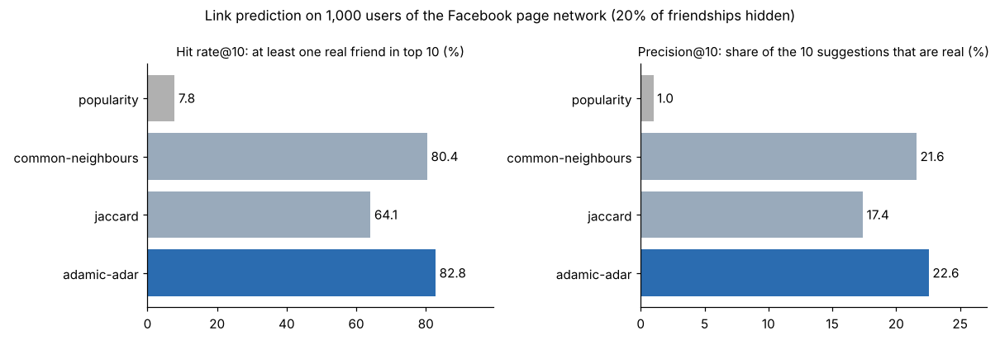

Friend Recommendation Engine
'People you may know', ranked from the shape of the network
A plain-C11 engine that suggests friends with three link-prediction scores and finds degrees of separation with BFS. On a real 22,470-node Facebook network, Adamic-Adar puts a real hidden friend in the top 10 for 82.8% of users, at 0.15 ms per query.
From graph to suggestions
algorithm + evaluation- 01Edge listCSV / CSV.gz
- 02Graphhash map: id → user
- 03Adjacencysorted, O(log d) lookup
- 04Walk 2 hopsfriends of friends, once
- 05ScoreCN · Jaccard · Adamic-Adar
- 06Top-Kranked, no duplicates
Hit rate@10 (higher is better)
Milliseconds per query (lower is better)
~/screens
See it working

[01] ~/the-problem
Why it matters
Every social network has to guess who you know. Suggesting the most popular people is easy but rarely right; the structure of your own connections says far more.
The original coursework version printed every friend-of-friend with duplicates, capped users at 100 and could overflow its name buffer. This rebuild fixes those bugs and measures the engine on real data.
Adamic-Adar wins because a mutual friend with few friends is stronger evidence than a celebrity everyone follows.
[02] ~/how-it-works
How it works
Store the graph efficiently, walk two hops once, and rank strangers by mutual connections.
- 01
Store it fast
Users live in dynamic arrays with a hash map from id to user, so there is no fixed 100-user limit.
- 02
Look up in log time
Each adjacency list stays sorted, so 'are A and B friends?' is a binary search, O(log d).
- 03
Walk two hops
For user u, the engine visits each friend's friends once, counting how every stranger is connected.
- 04
Score three ways
Common Neighbours, Jaccard and Adamic-Adar, with existing friends and the user themselves excluded.
- 05
Keep the top K
A small sorted buffer keeps the best K candidates, so ranking stays fast even on hub-heavy networks.
- 06
Prove it
Hide 20% of 1,000 users' friendships, ask for 10 suggestions each and count hits; 27 unit checks run under AddressSanitizer and UBSan.
[03] ~/results
Results
1,000 random users with 10+ friends, 20% of their friendships hidden, 10 suggestions each (seeded and reproducible).
| METHOD | HIT RATE@10 | PRECISION@10 | RECALL@10 | MS / QUERY | IDEA |
|---|---|---|---|---|---|
| Adamic-Adar | 82.8% | 22.6% | 44.4% | 0.15 | rare mutuals count more |
| Common Neighbours | 80.4% | 21.6% | 42.3% | 0.23 | count mutual friends |
| Jaccard | 64.1% | 17.4% | 31.1% | 0.16 | mutuals ÷ union |
| Popularity | 7.8% | 1.0% | 1.2% | 1.35 | baseline |
Jaccard over-rewards users with very few friends, so it trails the simpler mutual-friend count.
HONEST LIMITS
— The test network links Facebook pages, not people; friendships between people may follow different patterns.
— Hiding edges measures ranking quality offline, not whether real users would accept the suggestions.
WHAT I’D DO NEXT
→ Personalised PageRank as a fourth score
→ Graph embeddings (node2vec) for new users
→ Weighted edges from interaction counts
→ A small web demo on top of the C engine